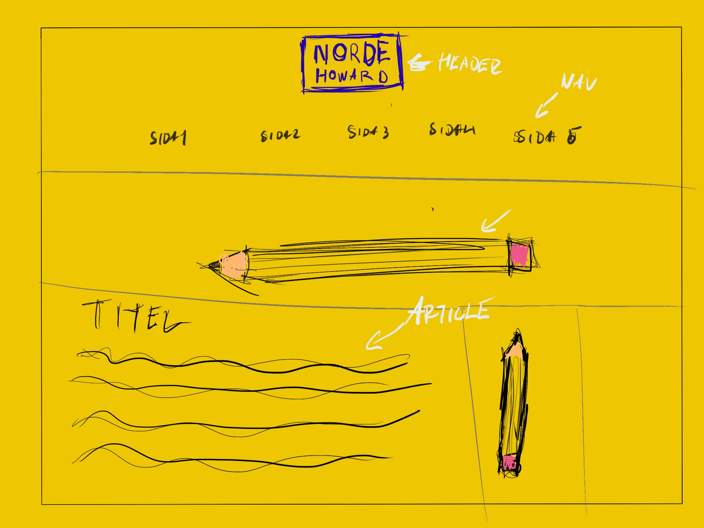

Dokumentation projekt Vt
1. Idébeskrivning
Jag gör en "portfoliosida" eller "showcasesida" för grejer som jag gjort som foto eller design.
En header med navbar och logga som är konsekvent över alla sidor. Mycket stilisering samt
funktionella och intuitiva animationer.
2. Planering
2.1 Handskiss

2.2 Schema
| Vecka |
På lektionen |
Utanför lektionen |
| 4 |
Planerar och skissar
|
|
| 5 |
Formar prototyp samt samlar assets
|
|
| 6 |
Koderino
|
|
| 7 |
' Sportlov
' |
|
| 8 |
Bortrest
|
|
| 9 |
Koderino samt assets redigeras
|
|
| 10 |
Koderino samt assets redigeras
|
Koderino
|
| 11 |
koderino samt assets redigeras
|
|
| 12 |
|
|
3. Dokumentation
Lektion vecka 4
Skissade på hemsidan och började på en figma prototyp.
Började även skriva lite på sidan på fritiden
Lektion vecka 5
Fortsätter med att skriva sidan samt att vidareutveckla prototyp.
Skrev mest på splashscreenen som var skit jobbig då jag ville ha blocken väldigt
stiliserade.
Lektion vecka 6
Jag fortsatte skriva sidan samt skriva om den så den blir mer och mer responsiv
samt påbörjat en till sida.
Lektion vecka 8
Lektion vecka 9
Lektion vecka 10
Skrev om min navbar så att den var 100% responsiv och funkade bra mellan alla plattformar.
Började även på ett galleri till "graphicdesign" sidan. Bestämde mig att överge min index sida då jag redan
lagt för mycket tid att få till den som jag vill utan att komma någon vart.
Lektion vecka 11
Hemma sjuk, gjorde product.html hemma
Lektion vecka 12
Gjorde finlir på små saker och gjorde min social.html
4. Testning
Funkar lika bra på android som ios samt vanliga desktop webbläsare, men på min TV funkar den inte så jätte bra då texten som ska vara vit blir svart och product sidan blir som en collumn
5. Utvärdering
I början av projektet la jag väldigt mycket tid på min index sida vilket tog upp väldigt mycket tid från annat, så till nästa projekt ska jag tänka på att spara finlir till slutet.
Jag övergav även mina skisser ganska snabbt så nästa gång kanske jag ska uppdatera dessa innnan jag börjar skriva kod. Jag missade även att pusha sidan till github då jag hade grejerna i fel mapp. Men lite ligger i min bin mapp istället.
Förbättring
Jag förbättrar min sida utifrån den respons jag fått. Jag fokuserar på att se till att all text är i läsbar storlek, mitt galleri är klart.
mer innehåll. Också se till att jag får till en bra analys och Utvärdering i slutet.
Jag börjar med att fixa mitt javascript eftesom jag uppveler att det kommer ta mest tid. Sedan lägger jag fokus på mitt galleri och tillslut på problemet med läsbar text.
2.2 Schema
| Vecka |
På lektionen |
Utanför lektionen |
| 18 |
Kollar vad som strular med javascript och fixar detta och pratar med Ola för respons när jag kör fast. När detta är klart påbörjar jag förbättring i galleri.
|
| 19 |
Fortsätter på galleri ifall detta inte än är klart. När det är klart så börjar jag arbetet med att se till att all text är läsbar. Detta skall vara klart innan lektioens slut.
|
| 20 |
Gör Utvärdering av sidan samt arbetar med eventuell respons av Ola
|
4. Testning
När jag testar med IE blir som skall vara vit istället svart. Mitt galleri blir inte likadant och ser lite klumpigt ut. "Product Design" följer inte korrekt grid. Dock funkar fortfarande mitt javascript.
När jag körde en html validator gav det utslag på att jag inte hade någon alt till mina bilder, detta gjordes medvetet för jag inte hade tid. Inga problem med sidan på varken android eller IOS, testad med både safari och Chrome.
5. Utvärdering
I början av projektet la jag väldigt mycket tid på min index sida vilket tog upp väldigt mycket tid från annat, så till nästa projekt ska jag tänka på att spara finlir till slutet.
Jag övergav även mina skisser ganska snabbt så nästa gång kanske jag ska uppdatera dessa innnan jag börjar skriva kod. Jag missade även att pusha sidan till github då jag hade grejerna i fel mapp. Men lite ligger i min bin mapp istället.
Testat i chrome är endast min photography sida som är långsammare än 120ms, detta för många bilder laddas in. Alla andra sidor ligger under 60ms